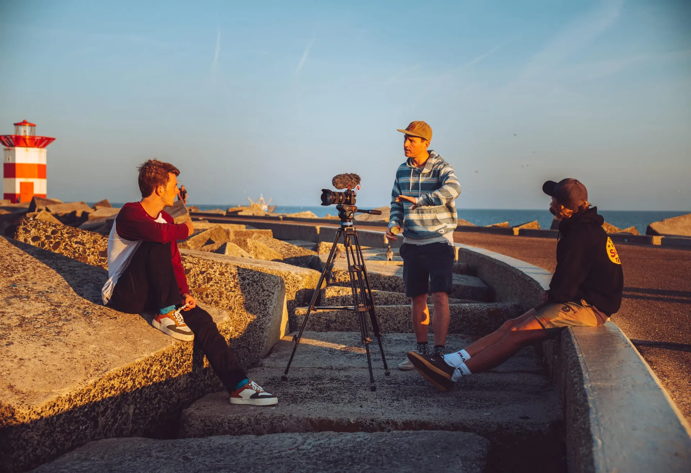
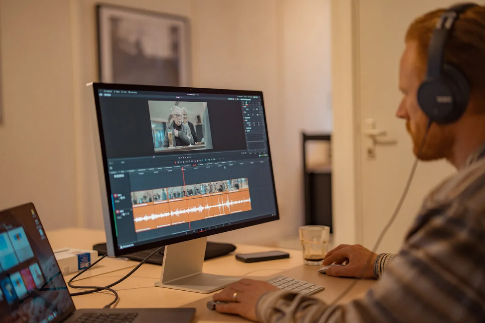
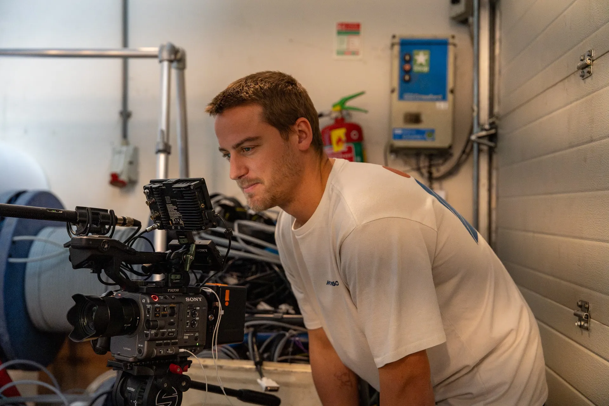
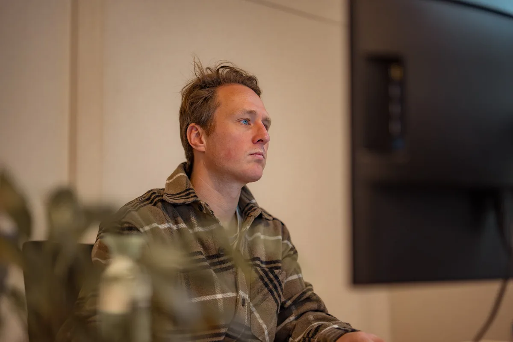
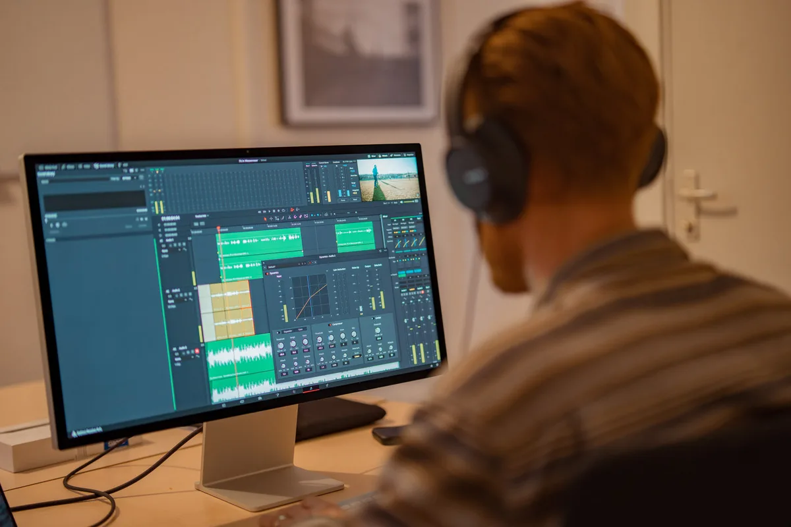
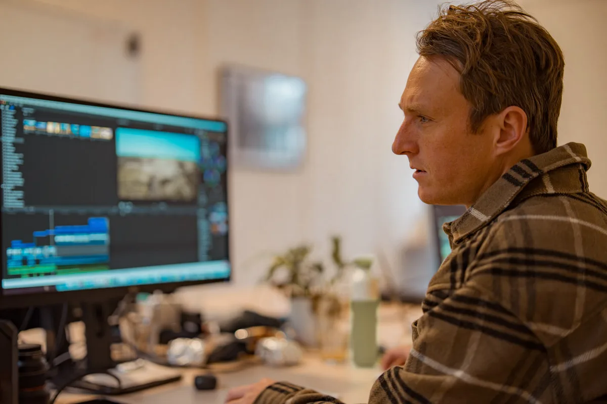
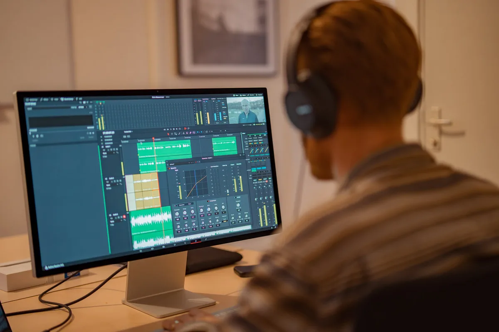
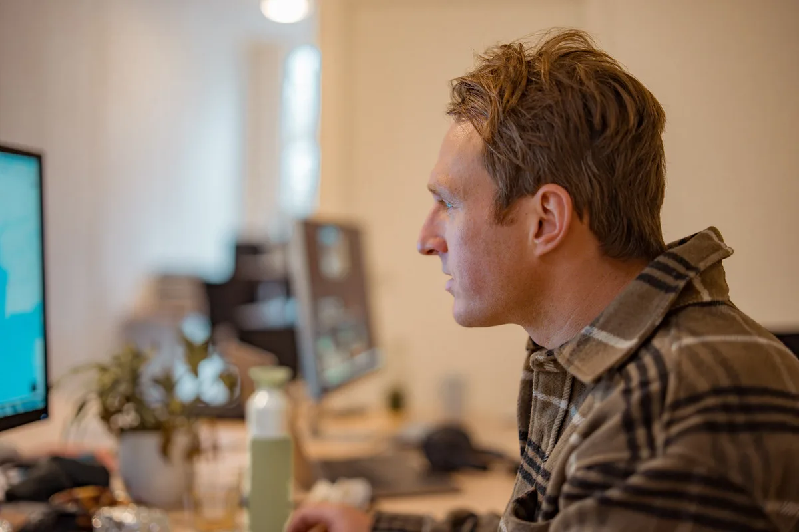
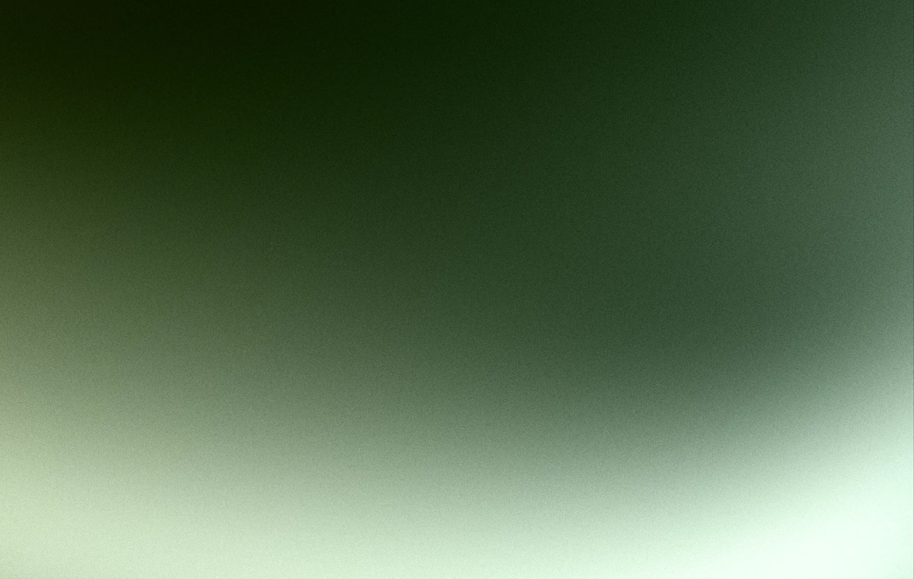

Over ons
STRATEGY MEETS CREATIVE.
Eén team. Strategie, film, design en groei onder één dak.
Eén team. Strategie, film, design en groei onder één dak.


Sircle Agency begon met een camera en een overtuiging: merken verdienen meer dan mooie plaatjes. Ze verdienen een verhaal, een strategie en een partner die beide werelden begrijpt.
Opgericht in 2020 door Sebas Vreeken, filmmaker en marketeer, groeide Sircle van een creatieve studio naar een volwaardig strategy-driven creative agency. Creativiteit zonder strategie is kunst. Strategie zonder creativiteit is een spreadsheet. Wij brengen beide samen.
Vandaag werken we met een team van strategen, designers, developers en filmmakers. Van merkstrategie tot website, van video tot groeimarketing. Geen losse partijen, maar één geïntegreerd team dat jouw merk van binnenuit begrijpt.


Het Sircle ecosysteem combineert strategie, creatie en technologie in drie gespecialiseerde takken die naadloos samenwerken.
Merkstrategie, branding, design, film en content. De creatieve kern die jouw verhaal vormgeeft en tot leven brengt.
Strategy & CreativeWebontwikkeling, platforms en technische oplossingen. Van WordPress tot maatwerk, gebouwd voor performance en groei.
Development & TechSEO, advertising, groeimarketing en analytics. Doorlopende groei met meetbare resultaten en strategisch advies.
Growth & Performance
Elk project begint met de waarom-vraag. We duiken diep in je merk, markt en doelgroep voordat we ook maar één pixel ontwerpen.
Liever één uitstekend project dan tien middelmatige. Kwaliteit is niet onderhandelbaar.
Elk merk heeft een verhaal dat het waard is om verteld te worden. Wij vinden het, vormgeven het en brengen het tot leven.
Geen verborgen kosten, geen vage beloftes. We delen het proces, de voortgang en de resultaten. Altijd open en eerlijk.
We bouwen relaties, geen campagnes. Ons model is ontworpen voor doorlopende groei, niet eenmalige opleveringen.
Veilig spelen levert veilige resultaten op. We challengen onze klanten en onszelf om écht impact te maken.


Achter elk project staat een zorgvuldig samengesteld team. Strategen, filmmakers, designers, developers en marketeers — elk geselecteerd op hun expertise en drive om merken écht verder te brengen.
Geen vast bureau van 50 man, maar een flexibel netwerk van bewezen vakspecialisten. Dat maakt ons wendbaar, scherp en betaalbaar — zonder concessies aan kwaliteit.

Op Locatie
Post-productie
Videografie
Creative Direction
Sound Design
Editing Contentproductie
Contentproductie

Audio Mixing
Regie
We starten met een vrijblijvend gesprek. We luisteren, stellen vragen en brengen je situatie in kaart. Geen verkooppraatje, maar een eerlijk gesprek.
Op basis van het gesprek maken we een helder voorstel met scope, planning en investering. Geen verrassingen achteraf.
Ons team gaat aan de slag. Tussentijdse reviews, heldere communicatie en een proces waar je zicht op hebt. Van concept tot oplevering.
Na lancering stoppen we niet. Met SircleCare en SircleGrowth zorgen we voor doorlopend onderhoud, optimalisatie en meetbare groei.
Plan een vrijblijvend gesprek. We luisteren eerst en komen dan met een helder voorstel.